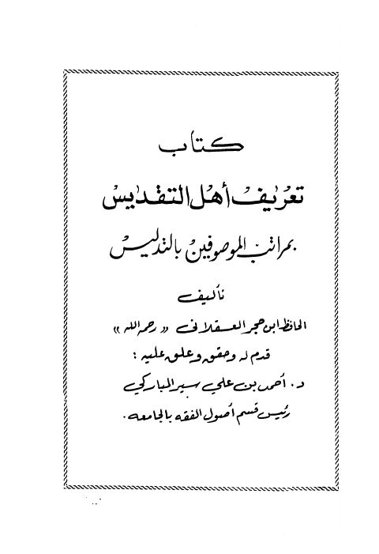

Downloads need an internet connection.
كتاب تعريف أهل التقديس بمراتب الموصوفين بالتدليس
Authors: أحمد بن علي بن حجر العسقلاني
Editors: أحمد بن علي سير المباركي
**▫️ العنوان: كتاب تعريف أهل التقديس بمراتب الموصوفين بالتدليس** ▪️ المؤلف: #أحمد_بن_علي_بن_حجر_العسقلاني ▫️ المحقق: #أحمد_بن_علي_سير_المباركي ▪️ الطبعة: 1 ▫️ عدد الأجزاء: 1 ▪️ الصفحات: 130 ▫️ نوع الوعاء: #كتاب ▪️ التصنيف الرئيسي: #الحديث_وعلومه ▫️ التصنيف الفرعي: #تراجم ۪